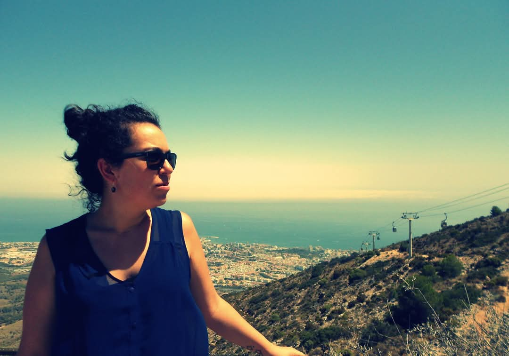

Soy Samantha Mohedano, andaluza de nacimiento y apasionada por el turismo, los datos y la tecnología. Estudié el Grado en Turismo (especialidad en gestión hotelera) en la Universidad de Alcalá de Henares (UAH), seguido de un Máster en Dirección Hotelera y Revenue Management.
Desde que finalicé mis estudios, he desarrollado mi carrera en el sector hotelero, desempeñando durante los últimos cuatro años el puesto de Revenue Manager en una cadena hotelera. Durante esta etapa descubrí mi pasión por el análisis de datos, ya que me permitía detectar tendencias, desarrollar estrategias de precios y tomar decisiones más informadas.
Además, tuve la oportunidad de liderar la implantación de los sistemas RMS y PMS en todos los hoteles del grupo, lo que despertó en mí un creciente interés por el desarrollo tecnológico.
Este interés me llevó a embarcarme en una nueva etapa formativa: el Grado Superior en Desarrollo de Aplicaciones Multiplataforma (DAM), con el objetivo de especializarme en Big Data y seguir creciendo profesionalmente como analista y desarrolladora tecnológica.
Me considero una persona alegre, comunicativa y con una gran curiosidad. No me conformo fácilmente: siempre busco aprender más y superarme en aquello que me apasiona.